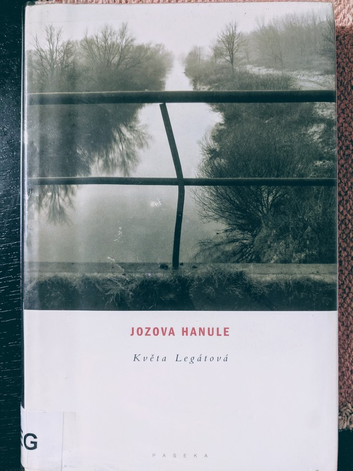
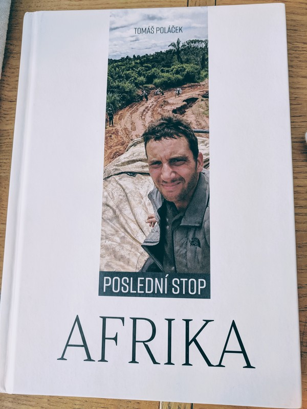
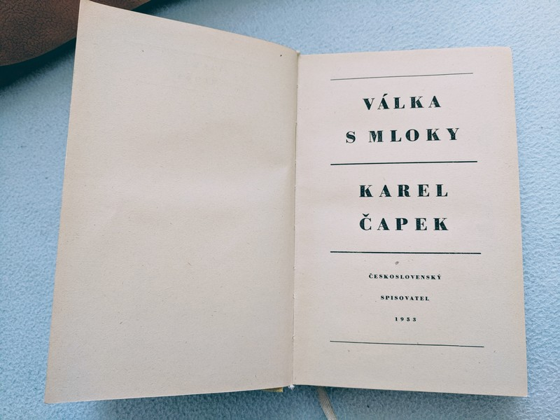
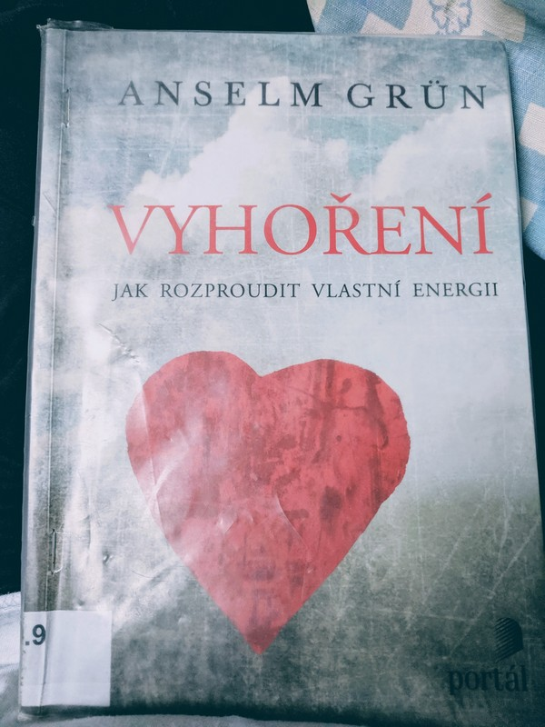
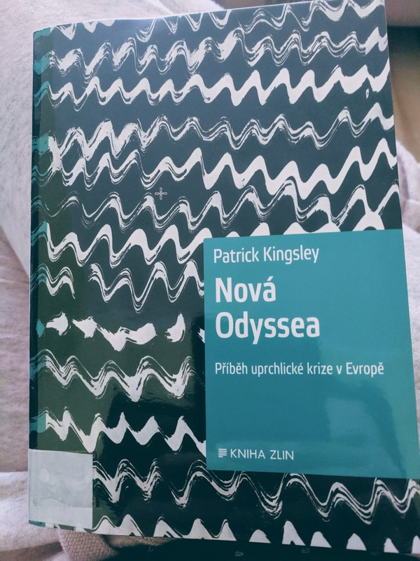
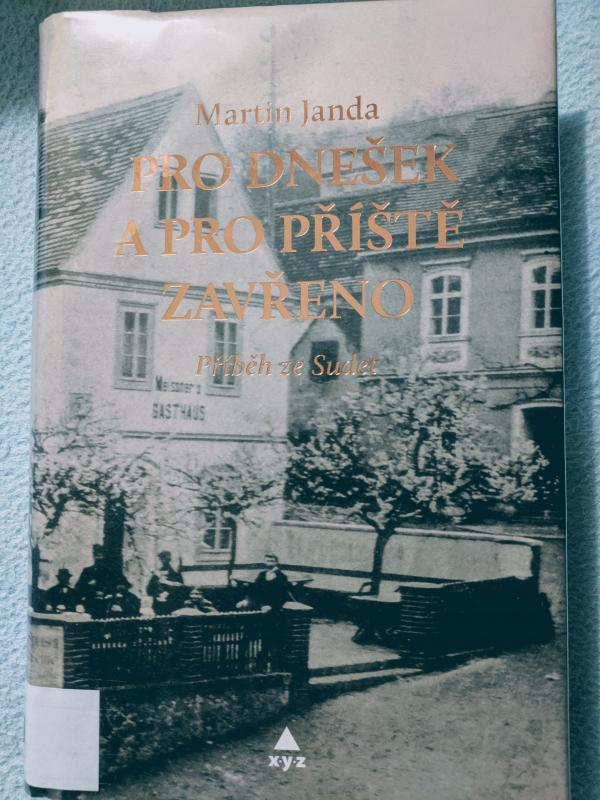
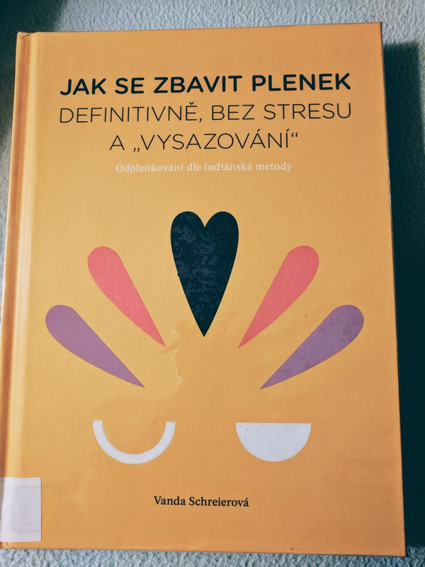

Literární příspěvek jsme tu už dlouho neměli. Vlastně celý blog delší dobu trochu stagnoval. Číst jsem ale nepřestala. Je to teď asi jediný útěk z reality, který si pravidelně dopřávám a vlastně si nedokážu představit, jak bych bez něj ty uplynulé měsíce přežila…
Květa Legátová - Jozova Hanule
Knížka proslavená coby předloha pro film Želary je útlým dílem, které upoutá svou prostou poetikou a krásným jazykem. Byť jsem si na styl knihy musela chvíli zvykat, silný příběh o nepravděpodobné lásce na pozadí druhé světové války si mě získal.

Tomáš Poláček - Afrika (Poslední stop)
Závěr “šílené” stopovací cesty kolem světa novináře Tomáše Poláčka je místy nervy drásající, ale ani na vteřinu nenudí. Pokud se vám nechce číst kniha, můžete si pustit rozhovor (nejen) o tom, jak se jezdí stopem po černém kontinentu, v pořadu DVTV. Možná vám pak Tomáš Poláček bude připadat jako ještě větší šílenec :) a taky si nejspíš pomyslíte, že je neuvěřitelné, jak může takovou výpravu vůbec člověk ve zdraví přežít. Tak či tak - klobouk dolů!

Karel Čapek - Válka s mloky
Po delší době zase jedna klasika ze školních lavic, aktuální dnes stejně jako v době, kdy vyšla poprvé. Kniha si ke mně našla cestu při stěhování sousedů od nás z baráku a ráda jsem se jí ujala :) Nadčasový alegorický román, který se vymyká všemu, co jsem dosud od Čapka četla. Místy mrazící, místy vyvolávající beznaděj nad nepoučitelností lidstva…

Alan Grün - Vyhoření (Jak rozproudit vlastní energii)
Kniha, v níž jsem vkládala jisté naděje během své prázdninové krize… Nemůžu říct, že by pro mě byla nějak zlomová, naopak mi místy přišla až moc spirituální, ale našlo se v ní i pár praktických tipů a některé z nich mi aspoň částečně nebo krátkodobě pomohly.

Patrick Kingsley - Nová Odyssea (Příběh uprchlické krize v Evropě)
Evropa (…) se bojí, že příliv cizinců naruší evropské hodnoty. Ale jaké hodnoty tu chceme udržovat, když se zřekneme povinnosti chránit ty, kteří neměli tolik štěstí jako my? Jak přimějeme uprchlíky, aby udržovali charakter naší společnosti, když je ten charakter tak nahlodaný?
Tuhle knížku bych doporučila přečíst opravdu každému! Žádná média vám nepodají tak objektivní, ucelená fakta, bez hysterie, bez rozjitřených emocí… Pro mě uprchlická krize nebyla nijak velkým tématem k diskuzi, ale tato práce reportéra deníku The Guardian mi v mnohém otevřela oči. Nejen v tom, že popisuje pohnutky i všechno to, co předchází přílivu migrantů do Evropy, ale hlavně v tom, že přináší zcela konkrétní příběhy konkrétních lidí jako jsem já nebo vy. Kniha rozhodně není psaná stylem, který by hrál na city, přesto jsem se místy neubránila slzám. Nová Odyssea nabízí opravdu diametrálně jiný pohled na migrační krizi, než jaký nám dnes a denně předkládají média.

Martin Janda - Pro dnešek a pro příště zavřeno (Příběh ze Sudet)
Tato knížka mi zpočátku svým jazykem nepřišla jako žádný literární skvost, ale brzy jsem se nechala pohltit jejím příběhem a nakonec si mě získala. Téma sudetských Němců za druhé světové války je samo o sobě tak silné a dramatické, že to asi ani jinak dopadnout nemohlo. A vlastně se mi ve výsledku na knize líbilo, že je psaná tak nějak “současně” a ten příběh by se mohl (samozřejmě až na ty historické okolnosti) odehrát i v dnešní době. Nezklamala mě ani milostná linie, u které mě nevímproč napadlo, že si do ní autor promítl svou vlastní trpkou zkušenost z nějakého nevydařeného vztahu 8-) Tak či tak se mi kniha opravdu líbila a ač jsem po ní v knihovně sáhla tak trochu náhodou, s klidným svědomím ji mohu doporučit dál.

Vanda Schreierová - Jak se zbavit plenek (Definitivně, bez stresu a “vysazování”)
Téma, které u nás už začíná být pomalu aktuální, takže není od věci si k tomu nastudovat nějakou literaturu :D Tahle kniha mě naplnila optimismem, že to nemusí být zas až taková věda. S odplenkováním dle indiánské metody sympatizuju mnohem víc než se způsoby, jakými se to dělalo za našich mladých let, respektive dává mi mnohem větší smysl zbavit dítě plenky až v okamžiku, kdy si opravdu uvědomuje o co kráčí. Tak teď ještě uvidíme, co na to praxe :-D
